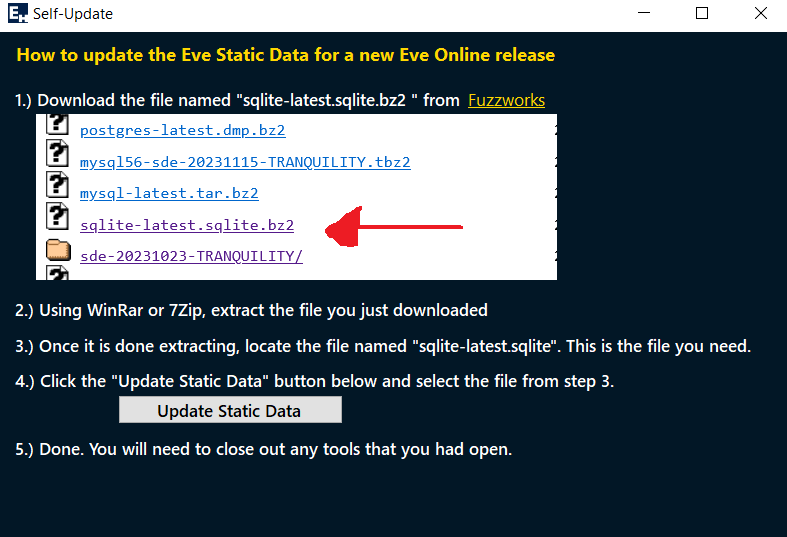

Self Updater
When Eve Online releases a new expansion or update that includes new items, it will be necessary to update the static data database
that is included in this application. I will be releasing a new version of the app with each update, but if I'm too slow, users can
update the app themselves.
To aide in this process, I've included a control that guides you on how to update the app. Follow the instructions on screen
and the app will be updated.
